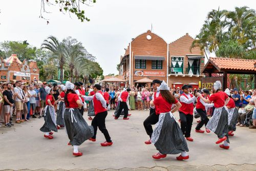
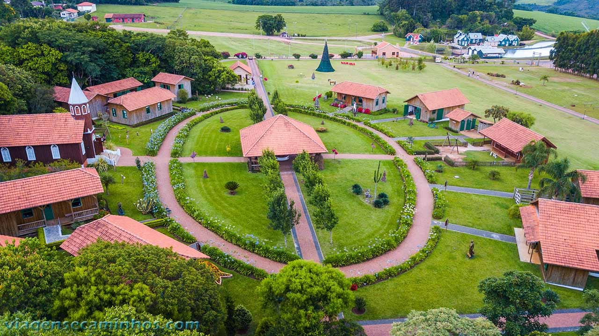

🗓️ Origem e chegada ao Paraná
Os holandeses vieram dos Países Baixos e começaram a chegar ao Paraná em 1909, instalando-se primeiro em Irati. Depois, fundaram colônias em:
Após a Segunda Guerra Mundial, novas famílias emigraram para o Brasil em busca de terras férteis, melhores condições de vida e oportunidades de trabalho.
🎨 Costumes e tradições
Os descendentes de holandeses preservam tradições como festas típicas, danças folclóricas (Horlepiep), uso de trajes tradicionais, igrejas protestantes e eventos comunitários. A valorização da família, do trabalho e da cooperação também faz parte de sua cultura.
🚜 Contribuições para o Paraná
Os imigrantes modernizaram a agricultura e a pecuária leiteira, introduziram novas tecnologias e criaram cooperativas que fortaleceram a economia da região. Essas iniciativas ajudaram a tornar os Campos Gerais uma referência nacional na produção de leite.
Carambeí é conhecida como o berço da imigração holandesa no Paraná e abriga o Parque Histórico de Carambeí, um dos maiores museus históricos a céu aberto do Brasil. As cooperativas fundadas por descendentes de holandeses continuam entre as mais importantes do agronegócio brasileiro.